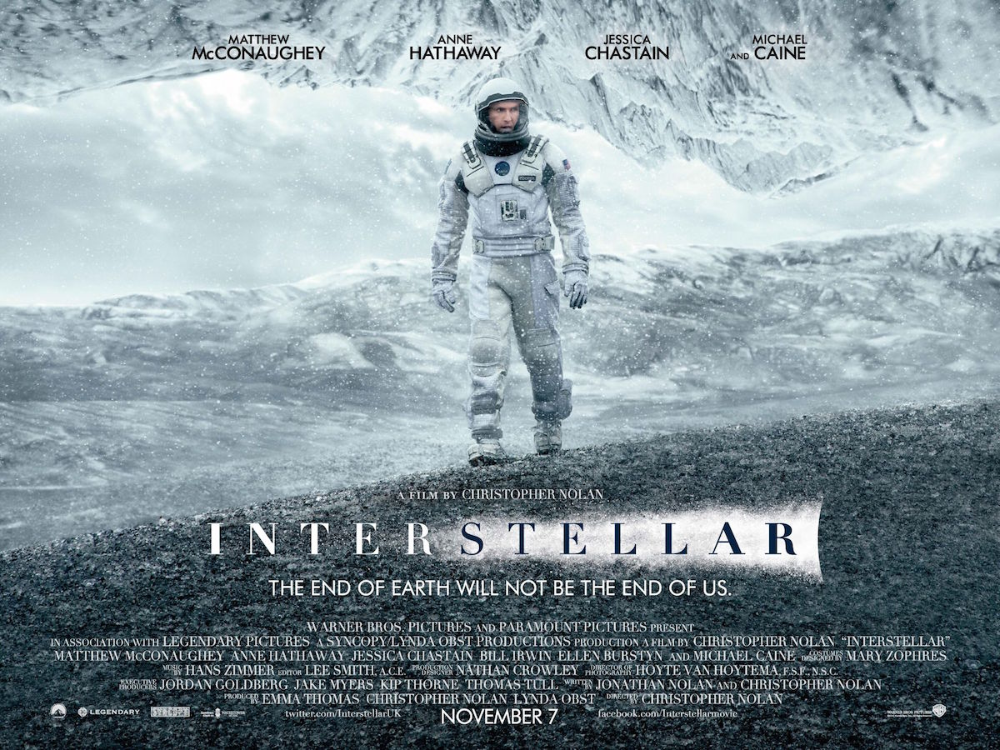

| Name | Profit | Cast | |||
|---|---|---|---|---|---|
| Toy Story | 200m | Tim Allen, Tom Hanks, Don Rickles | |||
| Finding Dory | 216m | Ellen DeGeneres, Ty Burrell, Albert Brooks | |||
| Interstellar | 390m | Matthew McConaughey, Anne Hathaway, Jessica Michelle Chastain, Michael Caine | |||
| Inception | 400m | Leonardo Wilhelm DiCaprio, Tom Hardy, Ellen Page, Joseph Gordon-Levitt | |||
Woody (Tom Hanks), a good-hearted cowboy doll who belongs to a young boy named Andy (John Morris), sees his position as Andy's favorite toy jeopardized when his parents buy him a Buzz Lightyear (Tim Allen) action figure. Even worse, the arrogant Buzz thinks he's a real spaceman on a mission to return to his home planet. When Andy's family moves to a new house, Woody and Buzz must escape the clutches of maladjusted neighbor Sid Phillips (Erik von Detten) and reunite with their boy.

Dory (Ellen DeGeneres) is a wide-eyed, blue tang fish who suffers from memory loss every 10 seconds or so. The one thing she can remember is that she somehow became separated from her parents as a child. With help from her friends Nemo and Marlin, Dory embarks on an epic adventure to find them. Her journey brings her to the Marine Life Institute, a conservatory that houses diverse ocean species. Dory now knows that her family reunion will only happen if she can save mom and dad from captivity.
In Earth's future, a global crop blight and second Dust Bowl are slowly rendering the planet uninhabitable. Professor Brand (Michael Caine), a brilliant NASA physicist, is working on plans to save mankind by transporting Earth's population to a new home via a wormhole. But first, Brand must send former NASA pilot Cooper (Matthew McConaughey) and a team of researchers through the wormhole and across the galaxy to find out which of three planets could be mankind's new home.
Dom Cobb (Leonardo DiCaprio) is a thief with the rare ability to enter people's dreams and steal their secrets from their subconscious. His skill has made him a hot commodity in the world of corporate espionage but has also cost him everything he loves. Cobb gets a chance at redemption when he is offered a seemingly impossible task: Plant an idea in someone's mind. If he succeeds, it will be the perfect crime, but a dangerous enemy anticipates Cobb's every move.